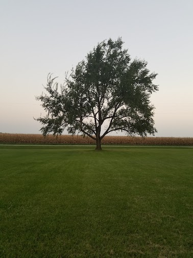

This page is here to show who I am outside of a professional of school enviroment
Although I don't go out and take photoes or make short movies as much I'd want to, it is still one of my passions. Many don't know this about me but I was strongly considering going to film school. I hope to start getting out more to take photos and film short movies like I did back in high School, this time with the beautiful streets of Chicago to play in.
My go-to cameras
The Chicago River
Rual Illinois
I have been playing video games for as long as I can remember. I started out playing on the orginal Play Station, and have playd on a consle from every generation since. My favorite console of all time probably has to be the Nintendo Game Cube, mostly for the nostalgia. I mostly play consloe games but plan on buiding a gaming pc in the near future. I love how video games can give you an escape from real life, and I think I appreciate that now more than ever.
Some of my all time favorite games:
If I had to choose Red Dead Redemption 2 (video above) would be my game of the year.